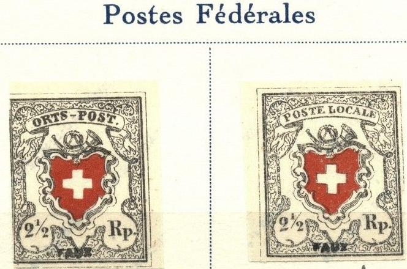
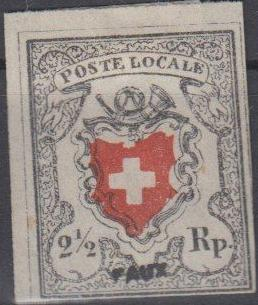
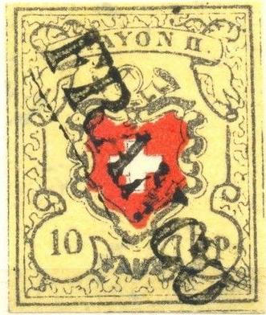

A. VENTURINI FORGERIES
Return To Catalogue -
Adrien Champion
Note: on my website many of the
pictures can not be seen! They are of course present in the
catalogue;
contact me if you want to purchase it.
A.Venturini was a forger from Italy in the early
1900's. He lived in Pisa, Turin and Florence.
According to "Philatelic Forgers, their
Lives and Works" by V.E.Tyler, he made (or at least sold)
forgeries of Swiss Cantonal stamps, French and French Colonies
postage dues, Spain, Baden, Monaco and Tuscany. He also sold
Spanish and Portuguese colonies forgeries. If anyone has more
information, please contact me! Also, according to the same
source, he might have obtained his forgeries from Oneglia.
In The London Philatelist 10, 36-39 (1901) we can
read that Henri Bauche (i.e. Adrien
Champion) was brought before the magistrate for selling
dangerous forgeries made by Venturini. The following text can be
found there:
"These forgeries of the Cantonal stamps have been known
just about six months, and photos of some of them have been given
in the Vertrauliches Korrespondenz Blatt. They comprise double
Geneva; 5 c. Geneva, black on green, and green on white ; Vaud, 4
c. and 5 c. ; Neuchatel, Winterthur, Poste Locale, Type 40 ;
Zurich, 6 r., Type 5 ; and probably also Zurich, 4 r., though
this has not yet been seen here. They come from Italy, and are
made by Venturini at Pisa, who
also makes 1 and 5 fr. Monaco, high values French Tax Stamps,
inverted heads of Spain, etc. He sells them, as forgeries, at 1
to 1 1/2 marks each, either unused or postmarked, and a number of
shady dealers, like A. Champion, who is now in Italy, have spread
them broadcast over France and Germany. No doubt now they are
trying England and America. The forgeries are photogravures, and
are therefore very good imitations ; but there are still points
by which they can be recognised, although the 6 r. of Zurich is
so good that the paper is almost the only test. It is really most
unsatisfactory that nothing can be done to stop the making of
these first-class forgeries."
In the same source, it is mentioned there that
the 4 c Vaud stamp is too wooly and indistinct in all its lines.
The dimensions of the double Geneva are wrong. The background of
the Poste Locale does not tally with the No.40 on the plate, from
which it has apparently been copied. Also, the cancels are all
wrong (it doesn't say what is wrong exactly). It also says that
Champion tried to sell 'Tretio' error stamps or Sweden, while he
was arrested in London.
In
the Philatelic Record of March 1901 (page 54) the following text
can be found on the arrest of Adrien Champion when he tried to
sell Venturini forgeries in London:
"Recent Swiss Forgeries. A successful attempt has been
made during the past month by a foreigner now in custody to palm
off on stamp dealers in London a number of forgeries of Swiss
Cantonals. In most cases the forgeries are wonderfully good, and
must be classed amongst the most dangerous yet produced, as they
have been made by photography. They differ very slightly in size
from the genuine. The envelope stamp (Gibbons number 6) is
slightly larger than the genuine ; but all the others are
fractionally smaller ; the double Geneva, of which we have seen
used and unused copies, are exactly 1mm. smaller than the
genuine. They are rather a paler yellow green than is generally
found on the original. They also show a few minor differences,
the most prominent of which are on the right-hand half—the
lower beak of the eagle does not touch the wing, which it should
do. The 4c. Vaud, of which we have also seen used and unused
copies, is slightly darker in colour, but this forgery is easier
to detect, as the figure " 4 " is not quite correct.
The Post Locale without frame is an attempt to be number 40 on
the plate, but on comparison differs slightly in the background.
Collectors and dealers are indebted to Mr. Peckitt for his prompt
warning to be on their guard."

Forgery of the 50 B Papal States stamp. The forged cancel
"VITERBO 6 DEC 67" is identical to the one found in
'The Fournier Album of Philatelic Forgeries'. In the book 'Roman
States Forgeries' by F.J.Levitsky and F.A.Jenkins this cancel was
actually attributed to Venturini. V.E.Tyler in "Philatelic
Forgers, their Lives and Works' mentions that Venturini offers
his printing plates for 20 Marks each.
(Forged Fournier cancels of Italy, taken from a Fournier Album;
reduced sizes)
The cancel "ROMA 17 AUG. 66" can be
found in 'The Fournier Album of Philatelic Forgeries' as shown
above. In the book 'Roman States Forgeries' by F.J.Levitsky and
F.A.Jenkins the cancels "ROMA 1 DEC 68",
"CIVITAVECCHIA 10 NOV 67" and "VITERBO 6 DEC
67" were actually attributed to the forger Venturini.
Probably a Fournier forgery with a cancel 'BADEN II 25 OCTO 1850'
in a double circle with posthorn at the bottom, identical to the
one found in The Fournier Album of
Philatelic Forgeries. In
http://www.pro-philatelie.de/faelschungen/altschweiz/14I%20slg-mb-fournier.jpg
a similar forgery can be found with 'POSTE LOCALE' inscription
(imitating type 28); it is there mentioned that it was probably
made by the forger Venturini and later sold by Fournier.

Venturini-Fournier forgeries as taken from a Fournier Album.

"ORTS-POST" forgery with strange wavy pattern above the
"PO" which none of the genuine types has. It was made
by Venturini who based this forgery on the genuine "POSTE
LOCALE" type 28 (see third image)

Other Venturini forgeries of Switzerland.
Copyright by Evert Klaseboer


{kind=link}
{kind=link}
{kind=link}